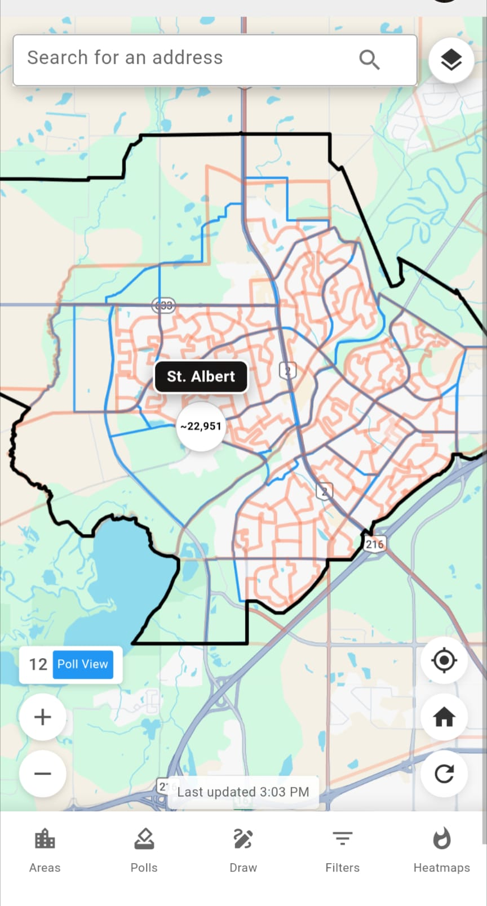
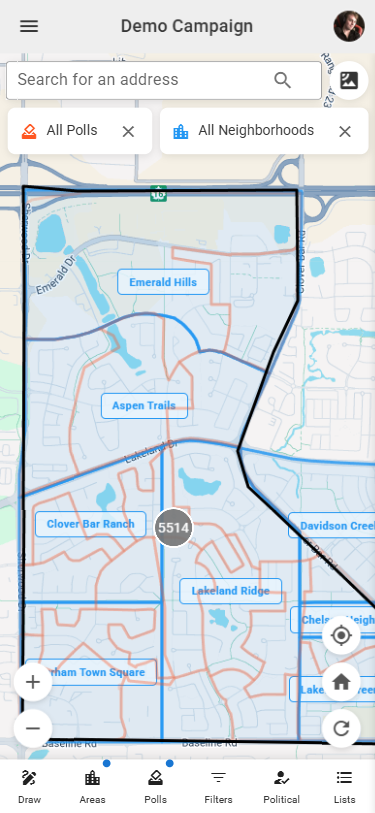
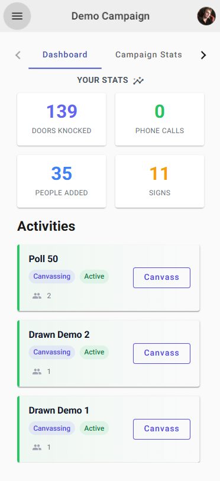
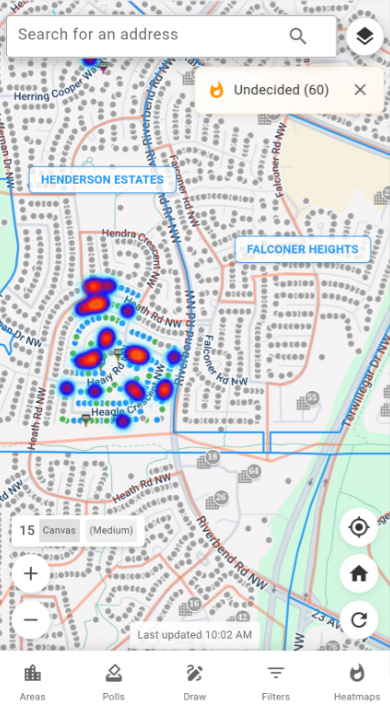
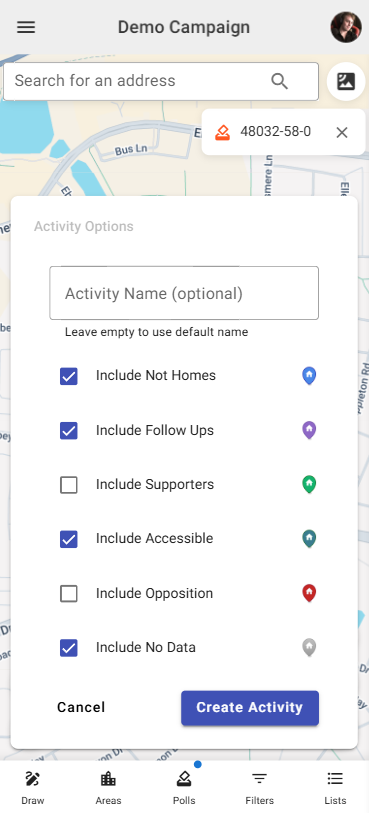
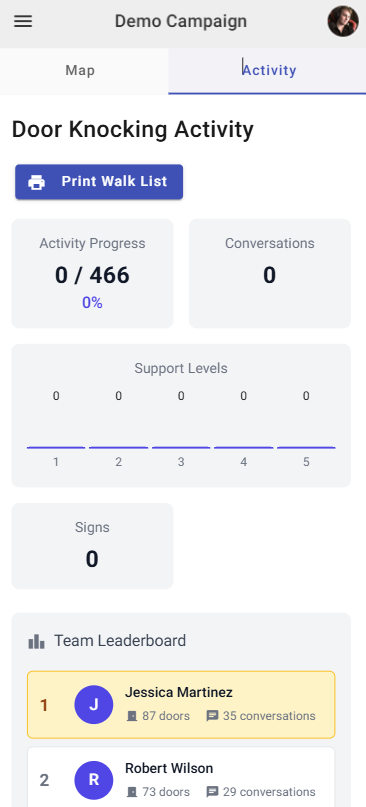
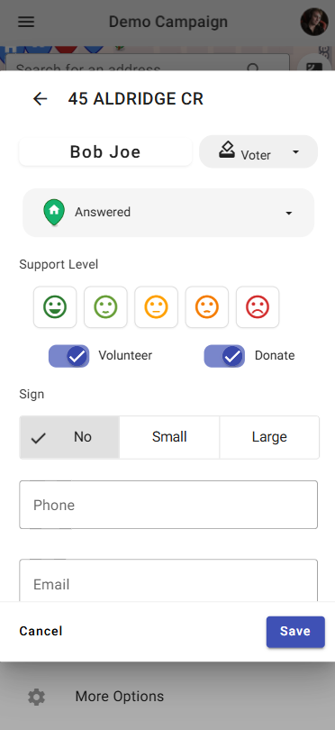
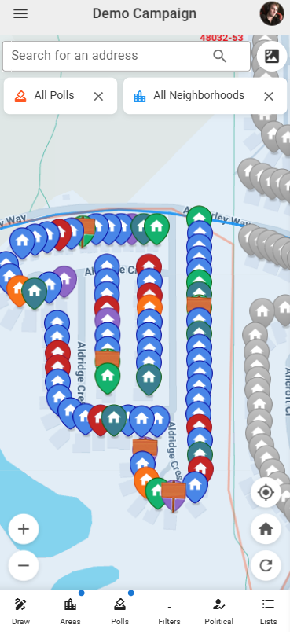
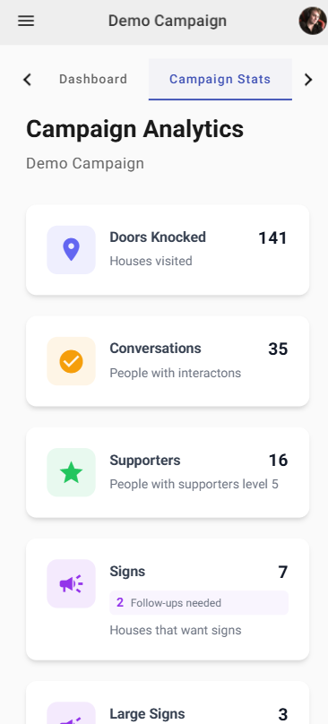
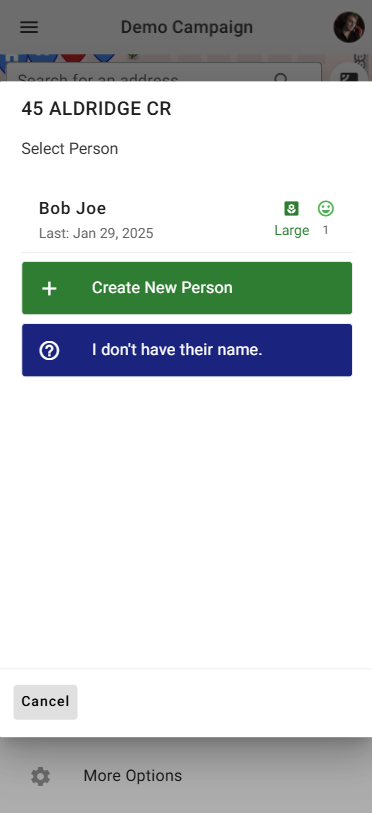

Canvassing
Door-to-door voter outreach with real-time mapping, instant sync, and live team member tracking.
The leading campaign app for Canadian municipal elections. Canvassing, Phonebanking, Text blasts, Email campaigns, and more for your campaign.










Door-to-door voter outreach with real-time mapping, instant sync, and live team member tracking.
Reach voters by personal phone or VOIP with integrated calling tools, scripts, and automatic response tracking.
Send targeted SMS campaigns to supporters with personalized messaging and delivery analytics.
Create and send professional email campaigns to your voter database with tracking and segmentation.
Access provincial and federal election results plus census demographics to understand voting patterns and target outreach.
Track lawn signs across your district with public and private sign requests, locations, and installation status.
Pre-loaded data for BC municipalities. Perfect for municipal campaigns across Metro Vancouver and beyond.
Complete municipal data for Ontario cities and towns. Start canvassing immediately in any district across the province.
Ready for Manitoba municipal elections with comprehensive address data for Winnipeg and surrounding municipalities.
All houses in your district ready to go from day one — no voter list required.
Real-time mapping, instant sync, and live team member location tracking. Watch your campaign progress unfold live as team members knock doors.
Call by personal phone or VOIP with scripts and automatic response tracking. Reach voters who aren't home when you knock.
Send targeted SMS campaigns to supporters with personalized messaging and delivery analytics.
Create and send professional email campaigns to your voter database with tracking and segmentation.
Seamlessly coordinate your Get Out The Vote efforts. Call someone on the phonebank, and they're automatically crossed off for the door knocking team — no duplicate contacts.
Draw areas on the map to select specific houses for activities. Perfect for targeting neighborhoods or creating efficient walking routes.
Track campaign progress across all channels with powerful visualization tools and dashboards.
Protect your data with Owner, Manager, Admin, and Volunteer roles.
Intuitive interface designed for canvassers on the move. Works on any device.
All data syncs instantly across devices and channels for real-time team collaboration.
Access census demographics and past provincial and federal election results to understand your district and target outreach.
Track public and private lawn sign requests, manage locations, and monitor installation status across your district.
Send prerecorded voice broadcasts to your voter list. Deliver your message at scale with automated dialing.
Visualize voter sentiment and campaign activity across your district with color-coded heat maps.

Built in Canada, for Canadian campaigns, with local expertise and support.
 NationBuilder
NationBuilder
 CallHub
CallHub
 Go High Level
Go High Level
 Quo
Quo